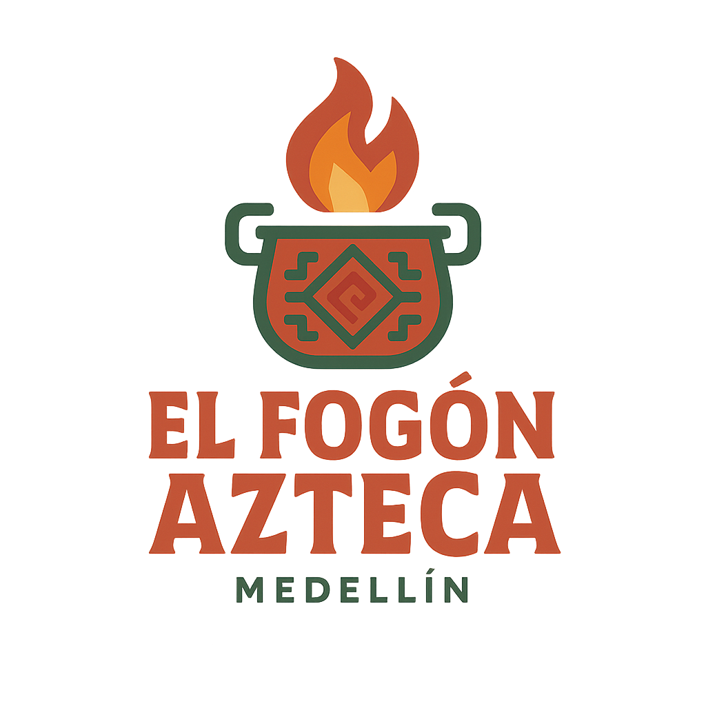

RESTAURANTE
Bienvenidos a El Fogón Azteca🍽️
Una fusión de raíces, sabor y tradición.
En Fogón Azteca Medellín rendimos homenaje a la auténtica cocina mexicana, rescatando ingredientes ancestrales y preparaciones tradicionales con un enfoque moderno y creativo. Aquí, cada plato cuenta una historia: la del maíz, del molcajete, del fogón... de nuestras raíces.
Nuestro espacio nace del amor por lo que somos: mestizos en cultura, en historia y en sazón. Por eso, nuestro menú ha sido cuidadosamente diseñado para ofrecerte una experiencia completa —desde entradas llenas de carácter, hasta platos fuertes que celebran nuestras regiones, y bebidas que refrescan el alma.
✨ Ya sea tu primera visita o seas de la casa, estás a punto de vivir una experiencia gastronómica inolvidable.
👉 Explora el menú y descubre el sabor que nos define.